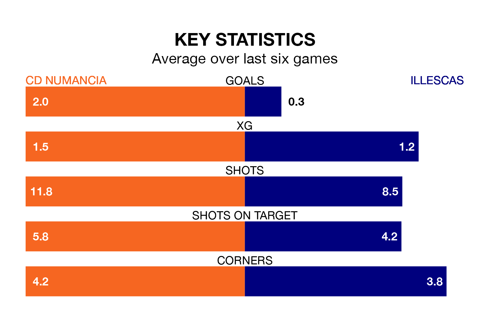

Two of Segunda División RFEF Group 5's top sides face each other at Nuevo Estadio Los Pajaritos in Sunday's early kick-off, when second-placed CD Numancia host fourth-placed Illescas.
Numancia have picked up 11 wins and five draws from 21 games so far this season, and sit four points above the visitors going into the 11am match.
Illescas, meanwhile, have won nine and drawn seven, picking up 34 points.
With 35 goals in 21 games so far this season, Numancia are the league's highest scorers with 1.7 goals per game. And they are conceding fewer than average, letting in 21 goals at a rate of 1.0 per game.
Illescas, meanwhile, are average scorers, with 1.1 goals per game. They have conceded 0.8 goals per game.
The home side are in good form in Segunda División RFEF Group 5, with four wins and a draw from their last six games.
With a win and three draws over that period, the visitors' form is much worse – they have taken six points from 18, compared to Numancia's 13.
Numancia's last match was on February 4, a 1-0 win against Atlético Paso.
Illescas drew 0-0 with CD Badajoz last time out, also on Sunday.
Updated: 13:52 (UTC), 05/02/24